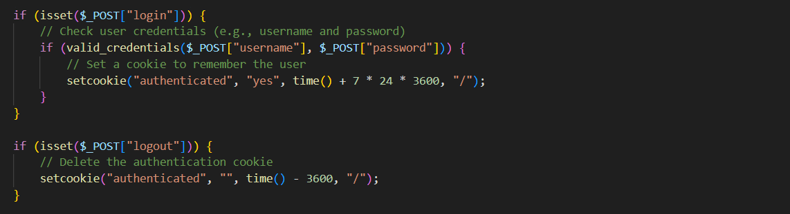

Cookies in PHP are small pieces of data stored on a user's computer by a web browser. They are used to remember information, such as user preferences or login status, between different pages or visits to a website. PHP allows developers to set, retrieve, and delete cookies. Cookies help personalize user experiences and enable websites to remember user actions, enhancing usability.
To set a cookie in PHP, you use the setcookie() function. The setcookie() function takes up to seven arguments, but the only required argument is the name of the cookie. The other arguments are optional and allow you to control the expiration date, path, domain, security, and HTTPOnly status of the cookie.
To retrieve cookies in PHP, you can use the $_COOKIE super global variable.
Cookies can be modified or deleted using the setcookie() function with updated values or by setting an expiration time in the past.
Cookies are often used for user authentication. Here's a simplified example of using cookies for user login/logout:
